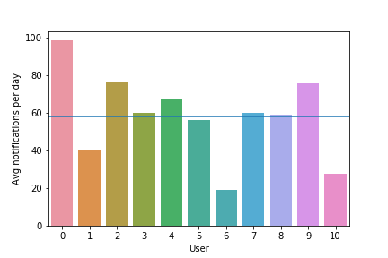
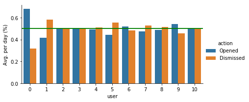
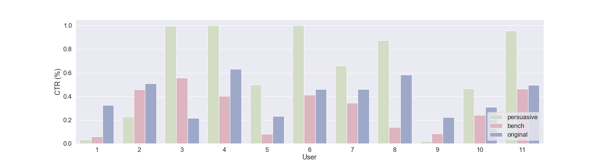

Distraction
- Push-notifications began as a mechanism for alerting people they had new mail in their inbox
- As app engagement and time-online became a commercial driver, push-notifications were used to persuade increased app usage
Result
- Push-notifications compete for user attention
- Information overload
- Limited end-user control
- Smartphone addiction
- Increased anxiety, FOMO, NOMOPHOBIA

{kind=link}
People receive, on average, approx. 60 notifications per day

{kind=link}
People dismiss as many notification as they open

{kind=link}
Personalised & Persuasive notifications = higher CTR%

Persuasive Features perform best when predicting whether a user will open or dismiss a notification
Persuasion
In our work*, Cialdini's 6 principle's of persuasion are extracted from push-notifications to scrutinize how designers may be manipulating us into opening notifications. Cialidini's principles are as follows:
- Authority (P1)
People follow and respect requests made by an authority - Scarcity (P2)
People will place higher value on something which is rare - Liking (P3)
People will follow what they like - Social Proof (P4)
People will do what they see their peers doing - Commitment & Consistency (P5)
People tend to follow through on their word and uphold behaviours associated with their own self-image. - Reciprocity (P6)
People feel obliged to return a favour
* Full results to be presented at Persuasive Technology 2019